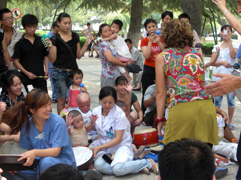

Host Your Own Event Benefitting HandReach
Want to help HandReach, but don't know how? It's easy – help us fundraise by hosting your own event! There's no better way to combine your interests and your passion for helping others!
Just follow this simple checklist to help you begin planning your own fundraising event.
1. Determine your level of commitment and what kind of event is appropriate for you. Whether you'd like to host a small dinner party or organize a 5-K fun run, any fundraiser that you undertake will have time and effort commitments that you will need to prepare for.
2. Outline your goals. How much money are you looking to raise? How many people do you want to attend? What kind of people do you want to attend? How much time and effort do you want to invest in the event?
3. Research your local area. Most venues and businesses offer free or discounted services and sponsorship to non-profits for their events. Find out what is available for non-profit fundraisers near you!
4. Enlist assistance. Our volunteers at HandReach want your event to go smoothly. We'll provide the necessary documentation that you'll need to get started soliciting corporate business. In the meantime, you should begin recruiting other local volunteers to assist you with your event.
5. Spread the word. Whether you want to invite 1 or 1,000 participants, you'll need to get the word out about the event! Utilizing social media sites (such as Facebook, Twitter, etc.) is a free and easy way to draw attention to your upcoming function.
6. Enjoy your event! After the event is complete, just send HandReach the check!